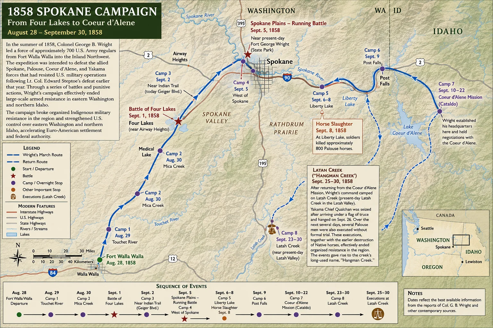

The Coeur d’Alene War, or Spokane War of 1858
The Coeur d’Alene War — often referred to as the Spokane War of 1858 — marked the definitive end of armed tribal resistance in the Washington interior. Triggered by encroachment, broken promises, and mutual suspicion, this brief but intense military campaign fundamentally altered the power dynamics of the Columbia Plateau.
1. The Steptoe Disaster: Battle of Pine Creek (May 17, 1858)
The conflict escalated drastically near modern-day Rosalia, Washington. Lieut. Colonel Edward Steptoe, leading a force of approximately 160 ill-equipped troops, was surrounded by an estimated 1,000 to 1,200 Coeur d’Alene, Spokane, and Palouse warriors.
Outgunned and cut off from water, Steptoe’s command suffered a humiliating tactical defeat. Under the cover of pitch darkness, the surviving troops barely escaped a total massacre by abandoning their pack trains and fleeing south across the Snake River.
2. Tactical Shift: The Battle of Four Lakes (September 1, 1858)
Determined to re-establish U.S. military authority, Colonel George Wright was dispatched with a heavily reinforced punitive expedition including artillery and dragoons. Armed with the newly issued Springfield Model 1855 rifle-musket utilizing the Minié ball, Wright’s troops possessed a catastrophic technological advantage.
At Four Lakes, the U.S. Army successfully engaged tribal forces from a distance of over 400 yards — well beyond the accurate range of the defenders’ smoothbore muskets and bows. The technological gap broke the traditional Plateau cavalry tactics.
3. The Battle of Spokane Plains (September 5, 1858)
A grueling, running battle fought across 14 miles of burning prairie completed the dispersion of the tribal confederation. Exhausted and facing overwhelming firepower, the allied tribal forces withdrew into the surrounding forests.
4. Scorched Earth: The Liberty Lake Horse Slaughter (September 8–10, 1858)
To ensure the Plateau tribes could never regroup or launch a winter counter-offensive, Colonel Wright initiated total economic warfare. Over a three-day period along the banks of the Spokane River (near modern Liberty Lake), Wright ordered the systematic execution of 800 captured Palouse horses and the destruction of local grain caches. This devastating blow destroyed the primary source of tribal wealth, mobility, and winter survival, effectively forcing the chiefs to sign unconditional surrender terms at the Council of Coeur d’Alene.
5. The Latah Creek Executions: The Hanging of Qualchan (September 24, 1858)
The ultimate display of Colonel Wright’s strategy of absolute subjugation took place along the banks of Latah Creek. Seeking to eliminate the leadership of the Plateau resistance, Wright used captive family members as leverage.
After luring the prominent Yakama warrior Qualchan into the U.S. Army camp under the pretense of peace negotiations, Wright ordered his immediate execution without a trial. Within fifteen minutes of entering the camp, Qualchan was hanged. The brutality of the incident permanently altered local geography; the waterway became known colloquially as Hangman Creek.
The Fate of Owhi, Lo-kout, and Whist-alks
Owhi — Qualchan’s father, Kamiakin’s brother-in-law, and a highly respected elder chief — had been captured under a white flag of truce the previous day and held in irons to force his son’s surrender. Just days after witnessing his son’s sudden hanging, Owhi was shot and mortally wounded by military guards while allegedly attempting to escape custody during the march toward Fort Walla Walla. He died hours later.
Lo-kout, Qualchan’s half-brother, entered the camp alongside him. In the chaos of Qualchan’s sudden arrest, Lo-kout managed a daring escape from the army camp, surviving the campaign to carry forward the oral history of his family’s betrayal. Read his own account in Chapter 18, “Speak of Lo-Kout.”
The Defiance of Whist-alks: Qualchan’s wife, Whist-alks — a renowned woman warrior of the Spokane people — stood beside him during the trap. Upon witnessing her husband’s arrest, she famously refused to submit. Defiant in the face of Wright’s troops, she drove her decorated spear into the ground, mounted her horse, and rode out of the military camp completely unhindered, surviving as a symbol of unbroken tribal sovereignty.
